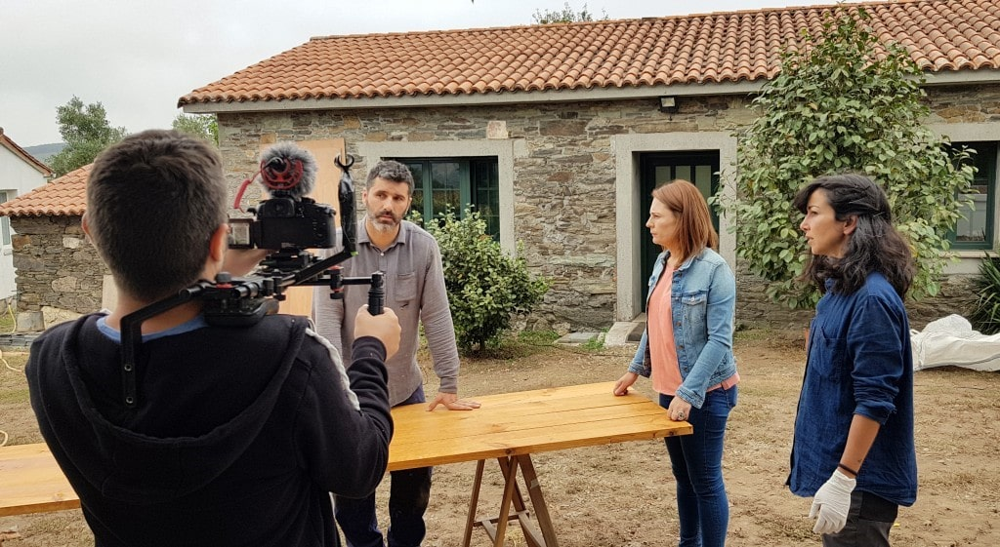
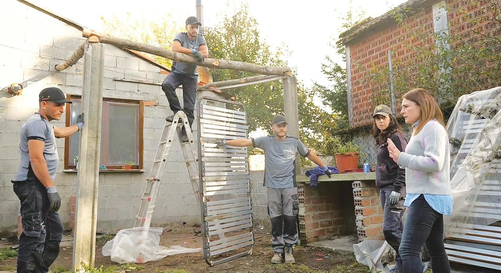
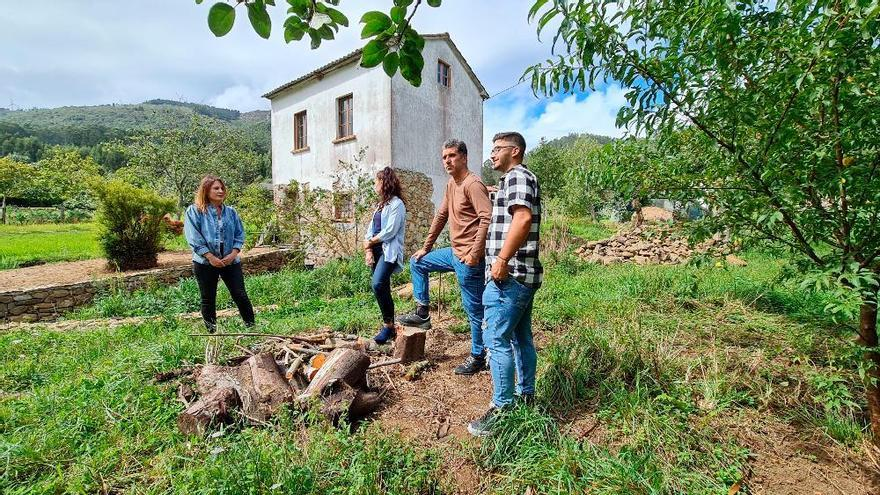

Conoce nuestro estudio
Facal Varela, Arquitectura e Interiorismo es un estudio de arquitectura gallego fundado en 2006 por la arquitecta Rosa Mª Facal Varela (1980) E.T.S.A.C con oficina en Santa Comba, A Coruña.
Contacto
Facal Varela Arquitectura colabora con Plan de emprego local
Socialmente indispensables: El Plan de Empleo Local constituye una estrategia para el desarrollo sostenible del territorio, que tiene cómo principal objetivo contribuir a un crecimiento sostenible promoviendo la creación de empleo estable y de calidad a nivel local.
Servicios
Todos los servicios son especializados y se distinguen por la calidad, la
comunicación con el cliente y el control de costes.
Ofrecemos soluciones integrales en todas las fases de un proyecto inmobiliario, incluyendo la
construcción, dando la posibilidad a nuestros clientes de realizar llave en mano.


Colaboradores
Contamos con un equipo multidisciplinar de técnicos cualificados con amplia experiencia en cada una de sus especialidades.
Galicia Bonita, unha loita contra o feísmo
La arquitecta Rosa Facal y sus pintorescos ayudantes visitan varias viviendas en mal estado de la geografía gallega para asesorar y ayudar en su rehabilitación.
Saber más-
-
 -
 -
